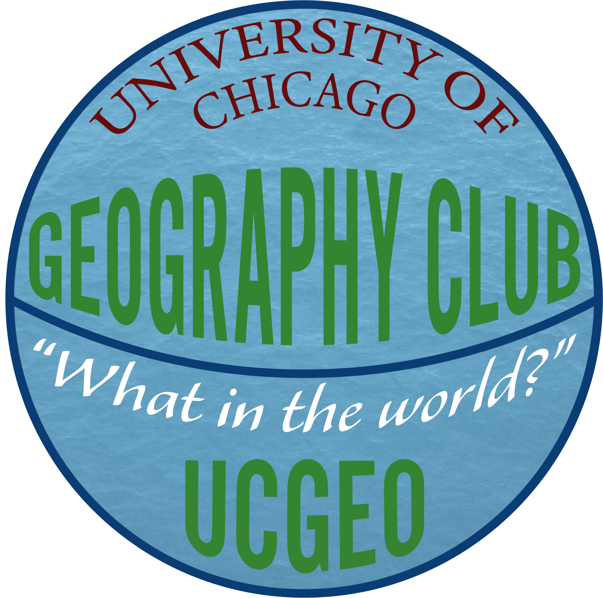
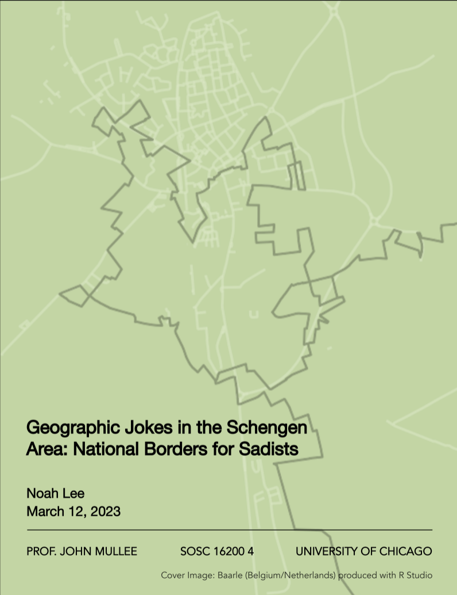
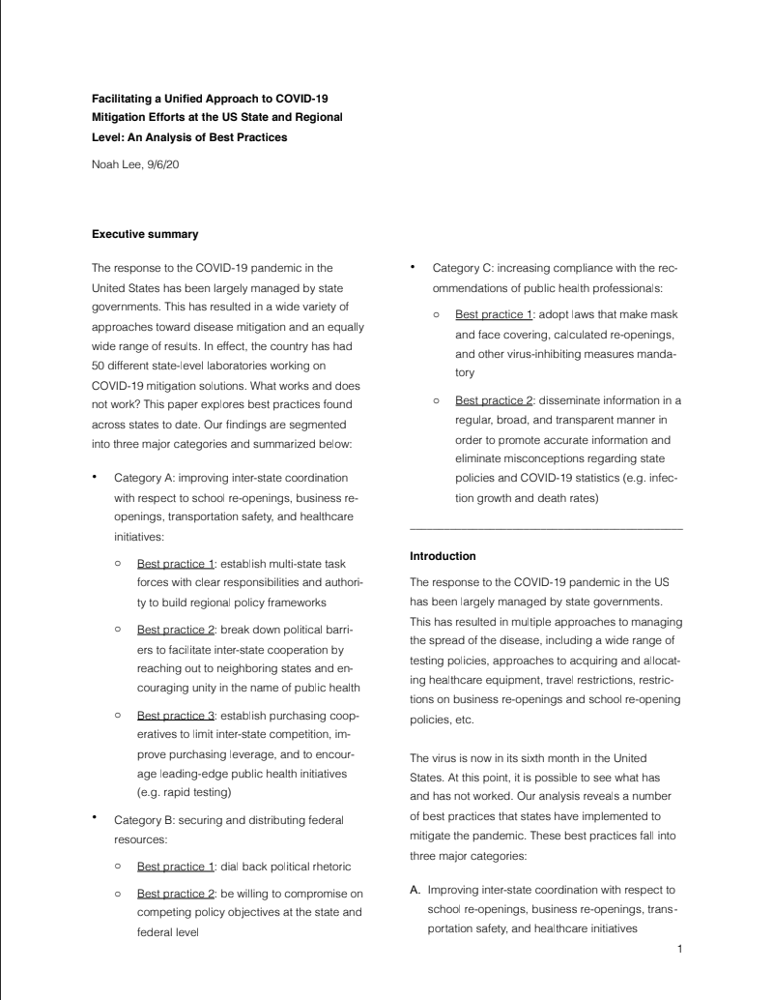

DialectDict
The internet's first-ever crowdsourced Fuzhounese-English dictionary featuring hundreds of words and characters with full audio support. Fuzhounese is a decaying dialect of Chinese spoken across Fujian Province as well as by diaspora

UCGEO
Co-founded the University of Chicago's Geographic Studies Club for undergraduate students to learn about and share perspectives on geographic studies and geographic information science
Expositions Magazine
Staff at Expositions Magazine, the University of Chicago's Environmental, Geographic, and Urbanization magazine. Member of the graphics team, vector illustrations, logos, and icons
My Youtube Channel
I post recordings of my 3D rendered architectural models as well as short films
Publications:

Geographic Jokes in the Schengen Area: National Borders for Sadists
An analytical, semi-satirical take on the state of the Schengen Area and its ideals of free movement in expectation versus reality, exploring darkly humorous contradictions within Schengen as it relates to borders, migration, and access

Metro Access and Accessibility in Los Angeles's Arts District and Boyle Heights
The newly-completed Sixth Street Viaduct Bridge connecting Los Angeles's Arts District and Boyle Heights neighborhoods presents an interesting spatial challenge for the city's Metro system. I used GIS to map the Bridge's surrounding communities' Metro networks and generated my own proposal for an alternate spatial layout based on accessibility, access, and population data

Facilitating a Unified Approach to COVID-19 Mitigation Efforts at the US State and Regional Level: An Analysis of Best Practices
Authored paper on COVID-19 policy recommendations for US jurisdictions under the guidance of Joe Colombano, Director of the Office of the Special Adviser on the 2030 Agenda for Sustainable Development in the Executive Office of the Secretary-General of the United Nations. Paper was read by World Health Organization Director-General Special Envoy for COVID-19, Dr. David Nabarro